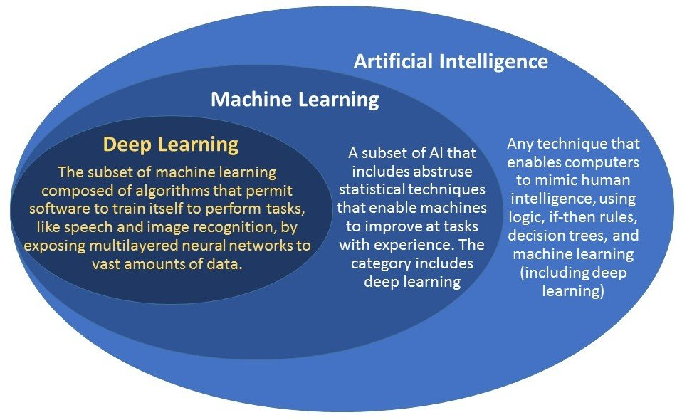
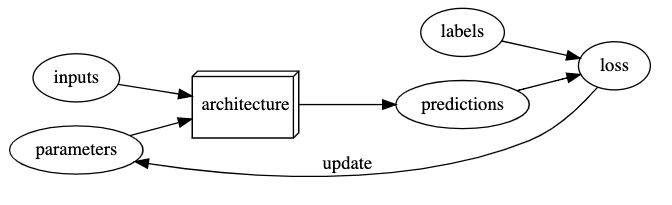
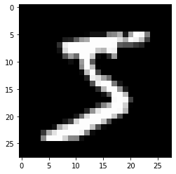
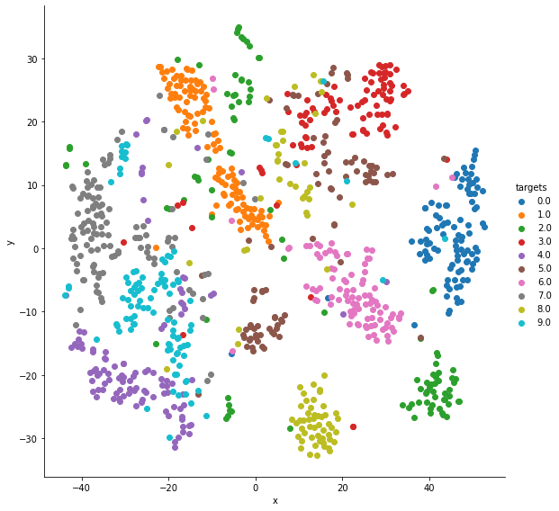

| Metric | Multiclass classification | Multilabel classification | Regression |
|---|---|---|---|
| error rate | Yes | Yes* | No |
| accuracy | Yes | Yes* | No |
A Journey Through Fastbook (AJTFB) - Chapter 1: The Basics of Deep Learning
fastai
fastbook
The first in a weekly-ish series where I revisit the fast.ai book, "Deep Learning for Coders with fastai & PyTorch", and provide commentary on the bits that jumped out to me chapter by chapter. So without further adieu, let’s go!
Other posts in this series:
A Journey Through Fastbook (AJTFB) - Chapter 2
A Journey Through Fastbook (AJTFB) - Chapter 3
A Journey Through Fastbook (AJTFB) - Chapter 4
A Journey Through Fastbook (AJTFB) - Chapter 5
A Journey Through Fastbook (AJTFB) - Chapter 6a
A Journey Through Fastbook (AJTFB) - Chapter 6b
A Journey Through Fastbook (AJTFB) - Chapter 7
A Journey Through Fastbook (AJTFB) - Chapter 8
A Journey Through Fastbook (AJTFB) - Chapter 9
Cervantes once wrote that “the journey is better than the inn”, but I rather like to think that the journey is the inn.
It means that the journey, irrespective to its difficulties (and likely because of them), is what you look back on with fondness at its end rather than the end itself. It’s why I enjoy reading “The Lord of the Rings” every five years or so, where as I age and experience the hand life has dealt me, I find myself appreciating different aspects of the story from the time before and gaining new insights into what I value and want to be as a human being. I find my journey with deep learning to be roughly analgous to that.
I’ve been a part of the fast.ai community for several years. I’ve been through the course multiple times (since it was using theano back in the old days), I’ve contributed to the library, and use it as the basis for one of my own. And as with each course, with a re-reading of the book I find myself deriving new insights and appreciating different ideas than those I had before.
And so, while your journey may bring you different revelations, here are the meandering thoughts of one 49 year old married father of 3 living in San Diego, California, USA, as I embark upon the first chapter in what I consider “The Lord of the Rings” of deep learning.
How to learn Deep Learning
You can do this!
Hi, everybody; I’m Jeremy … I do not have any formal technical education … didn’t have great grades. I was much more interested in doing real projects.
This is meaningful to me as someone with a BA in History and a MA in Theology. It’s a reminder that if you want something, it’s within your grasp to make it happen if you are willing to put in the work. It’s also a reminder that key to getting there is actually doing something! I find too many people thinking that if they just get into that school, or if they can just take that class, then they’ll be a good software enginner or deep learning practitioner. The reality is that the only way you get there is by doing it … just like pull-ups (which aren’t much fun when you’re starting out and/or you’re 49 and overweight).
The problem with traditional education
… how math is taught - we require students to spend years doing rote memorization and learning dry disconnected fundatmentals that we claim will pay off later, long after most of them quit the subject.
This also is the problem with higher education in general, where young people spend at least four to five years learning things they already learned in High School or else things they don’t really care about and will be forgotten right after finals, spending in excess of $100,000 for the privilege of it and likely going into debt in the tens of thousands of dollars, all with this idea that having done it they will be prepared for the real world. Unfortunately, that’s not how it works. Whether you are in a university of even go to university, what matter is what you do … not what classes you took or what your GPA is.
Deep Learning (and coding in general) is an art maybe more so than a science
The hardest part of deep learning is artisanal.
I remember going to an iOS conference way back in the day and a conference speaker asking how many folks in the session I was sitting in had a background in music. 80-90% of the audience raised their hands. Sure, there is math and stats and a science to deep learning, but like any coding enterprise, it’s an art … with some artists being better than others along with room for improvement regardless of whether you’re Van Gough or painting by the numbers.
Doing is how you learn, and what you’ve done is what matters
… focus on your hobbies and passions … Common character traits in the people who do well at deep learning include playfulness and curiosity.
at Tesla .. CEO Elon Musk says ‘A PhD is definitely not required. All that matters is a deep understanding of AI & ability to implement NNs in a way that is actually useful …. Don’t care if you even graduated High School.’
… the most important thing for learning deep learning is writing code and experimenting.”
Folks to follow
It’s always helpful to have some role models; folks who practice the lessons learned above and can help you along your journey.
For starters, consider this image of the top 12 users based on most likes in the fast.ai forums: 
Aside from the founders of fast.ai and a bunch of them working for noteable ML companies like Hugging Face and Weights & Biases, I can think of at least FOUR things these folks have in common:
They are fearless in asking what they may have even considered, dumb questions.
They are active in researching the answers to their own questions (even the dumb ones) and those asked by others.
They are active in teaching others through blogs, books, open source libraries, study groups, and podcasts.
They build things! That is, they all have experience building models and making them usable via deployed applications and/or in kaggle compeititions. Anyone can bake a half-cooked model in a Jupyter notebook, but few can turn it into something others can use.
These traits aren’t just key to learning deep learning; they are key to learning anything! Practice them and you guarantee yourself success in learning anything you’ve set your mind on.
If you had to choose just three …
Aside from Jeremy (@jeremyphoward), who’s a given, if I could only follow three people who have mastered to art of learning deep learning, they would be …
Radek Osmulsk: (twitter: @radekosmulski)
If you found this of value, you might be interested in a book on learning deep learning that I wrote
— @radek@sigmoid.social (Mastodon) 🇺🇦 (@radekosmulski) November 2, 2021
check it out here >>> https://t.co/ApKlm8BRmy
Zach Mueller: (twitter: @TheZachMueller)
To me, I think it boiled down to how I learned. I took those two courses essentially over the course of a year or so. Approaching each lesson slowly, and letting myself wander in the related concepts, learning as much as I could through online communities.
— Zach Mueller (@TheZachMueller) October 23, 2021
Sanyam Bhutani: (twitter: @bhutanisanyam1)
The @PyTorch book reading group @weights_biases comes to an end🙏
— Sanyam Bhutani (@bhutanisanyam1) October 25, 2021
We had an incredible 10 weeks of learning!
As a group wanted to extend our gratitude to the incredible authors: Eli, @lantiga & @ThomasViehmann
A few words from our community:https://t.co/3ODz6J1vad
Personally, I do follow each of these individuals on twitter and you should too! Though I’ve never met any of them IRL, I consider the colleagues, friends, and amongst the most helpful for those looking to get started in machine learning.
Tip
Twitter is imo the best place to network with fellow ML/DL practioners and stay up-to-date with the latest developments in ML in general
Here’s a tl;dr for folks too lazy to read the above …
What is machine learning?
Here we look at machine learning in general (of which deep learning is a subset) as well as the process of finetuning a pretrained ML model. When you think of deep learning … think neural networks.

A picture

An explanation
“Suppose we arrange for some automatic means of testing the effectiveness of any current weight assignment in terms of actual performance and provide a mechanism for altering the weight assignment so as to maximize the performance. We need not go into the details of such a procedure to see that it could be made entirely automatic and to see that a machine so programmed would ‘learn’ from its experince” - Arthur Samuel
Architecture vs. model
… a model is a special kind of program: it’s one that can do many different things, depending on the weights.
The functional form of the model is called its architecture.
Note
The architecture is “the template of the model that we’re trying to fit; i.e., the actual mathematical function that we’re passing the input data and parameters to” … whereas the model is a particular set of parameters + the architecture.
Parameters
Weights are just variables, and a weight assignment is a particuarl choice of values for those variables. [Weights] are generally referred to as model parameters … the term weights being reserved for a particular type of model parameter.
The weights are called parameters.
Note
These parameters are the things that are “learnt”; the values that can be updated, whereas activations in a neural network are simply numbers as the result of some calculation.
Inputs vs.labels
The inputs, also known as your independent variable(s) [your X] is what your model uses to make predictions.
The labels, also known as your dependent variable(s) [your y] represent the correct target value for your task.
Loss
The [model’s] measure of performance is called the loss … [the value of which depends on how well your model is able to predict] the correct labels.
The loss is a measure of model performance that SGD can use to make your model better. A good loss function provides good gradients (slopes) that can be used to make even very minor changes to your weights so as to improve things. Visually, you want gentle rolling hills rather than abrupt steps or jagged peaks.
Note
You can think of the loss as the model’s metric, that is, how it both understands how good it is and can help it improve.
Transfer learning
Transfer learning is the process of taking a “pretrained model” that has been trained on a very large dataset with proven SOTA results, and “fine tuning” it for your specific task, which while likely similar to the task the pretrained model was trained for to one degree or another, is not the necesarily the same.
How does it work?
- The head of your model (the newly added part specific to your dataset/task) should be trained first since it is the only one with completely random weights.
- The degree to which your weights of the pretrained model will need to be updated is proportional to how similar your data is to the data it was trained on. The more dissimilar, the more the weights will need to be changed.
- Your model will only be as good as the data it was trained on, so make sure what you have is representative of what it will see in the real world. It “can learn to operate on only the patterns seen in the input data used to train it.”
The process of training (or fitting) the model is the process of finding a set of parameter values (or weights) that specialize that general architecture into a model that works well for our particular kind of data [and task]
What is the high-level approach in fastai?
fastai provides a fine_tune method that uses proven tricks and hyperparameters for various DL tasks that the author’s have found works well most of the time.
What do we have at the end of training (or finetuning)?
… once the model is trained - that is, once we’ve chosen our final weight assignments - then we can think of the weights as being part of the model since we’re not varying them anymore.
This means a trained model can be treated like a typical function.
Metrics
A definition
Metrics are a human-understandable measures of model quality whereas the loss is the machine’s. They are based on your validation set and are what you really care about, whereas the loss is “a measure of performance” that the training system can use to update weights automatically.
A good choice for loss is a function “that is easy for stochastic gradient descent (SGD) to use, whereas a good choies for your metrics are functions that your business users will care about. Seldom are they the same because most metrics don’t provide smooth gradients that SGD can use to update your model’s weights.
Note
Again, they are based on your validation/test sets (not your training set). Ultimately, we want to have a model that generalizes well to inputs it was not trained on, and this is what our validation/test sets represent. This is how we relay our model quality.
Examples
There are a whole list of metrics built into the fastai library, see here. Below I begin a listing of the most common ones as they come up in the fastbook (and from personal experience).
error rate = “the proportion of images that were incorrectly identified.”
accuracy = the proportation of images that were correctly identified (1 - error rate)
Metrics to use based on task
* indicates that other metrics may be better for the given task.
Training, validation, and test datasets
What is a training set?
A training set consits of the data your model sees during training. These are the inputs and labels your model will use to determine the loss and update it’s parameters in a way that will hopefully lead to a model that works well for its given task.
Why do we need a training set?
Because a model needs something to train on. It should be representative of the data the model will see in the future, and it should be updated if/when you discover that is not the case.
How to use a training set?
To train a model on examples resembling that which the model will seen in the future. More is generally better, but quality is king (e.g., bad data in, bad data out).
To provide augmented examples for your model to see so as to increase the number of examples and better reflect what the model may see in the real world.
What is a validation set?
A validation set (also know as the “development set”) does not include any data from the training set. It’s purpose to is gauge the generalization prowess of your model and also ensure you are neight overfitting or underfitting.
“If [the model] makes an accurate prediction for a data item, that should be because it has learned characteristics of that kind of item, and not because the model has been shaped by actually having seen that particular item.”
Why do we need a validation set?
“[because] what we care about is how well our model works on previously unseen images … the longer you train for, the better your accuracy will get on the training set … as the model starts to memorize the training set rather than finding generalizable underlying patterns in the data = overfitting”

Overfitting happens when the model “remembers specific features of the input data, rather than generalizing well to data not seen during training.”
Note
ALWAYS overfit before anything else. It is your training loss gets better while your validation loss gets worse … in other words, if you’re validation loss is improving, even if not to the extent of your training loss, you are not overfitting
Note
ALWAYS include a validation set.
Note
ALWAYS use the validation set to measure your accuracy (or any metrics).
Note
ALWAYS set the seed parameter so that you “get the same validation set every time” so that “if we change our model and retrain it, we know any differences are due to the changes to the model, not due to having a different random validation set.”
Tip
For a good discussion of how to achieve predictable randomness, see this discussion on the fast.ai forums. There are actually several seeds you need to set and in several places when using fast.ai to achieve reproducibility.
How to use a validation set?
It gives us a sense of how well our model is doing on examples it hasn’t seen, which makes sense since the ultimate worth of a model is in how well it generalizes to things unseen in the future.
The validation set also informs us how we may change the hyperparamters (e.g., model architecture, learning rates, data augmentation, etc…) to improve results. These parameters are NOT learned … they are choices WE make that affect the learning of the model parameters.
What is a test set?
A test set ensures that we aren’t overfitting our hyperparameter choices; it is held back even from ourselves and used to evaulate the model at the very end.
“[Since we] are evaluating the model by looking at predictions on the validation data when we decide to explore new hyperparameter values … subsequent version of the model are, indirectly, shaped by us having seen the validation data … [and therefore], we are in danger of overfitting the validation data through human trial and error and exploration.”
Note
A key property of the validation and test sets is that they must be representative of the new data you will see in the future.
Why do we need a test set?
To ensure we aren’t inadvertently causing the model to overfit via our hyperparameter tuning which happens as a result of us looking at the validation set. It is a completely hidden dataset; it isn’t used for training or tuning, only for measuring performance.
How to use a test set?
If evaluating 3rd party solutions. You’ll want to know how to create a good test set and how to create a good baseline model. Hold these out from the potential consultants and use them to fairly evaluate their work.
To ensure you aren’t overfitting your model as a result of validation set examination. As with the validation set, a good test set offers further assurance your model isn’t learning particular ancillary features of particular things in your images.
How to create good validation and test sets
It isn’t always as easy as randomly shuffling your data!
Again, what both of these sets should haven in common is that they “must be representative of the new data you will see in the future.” And what this looks like often dependes on your use case and task.
Tip
You really need to think about what you need to predict and what you’d look at to make that prediction. You also need to make sure your training data is qualitatively different enough from your real world data (e.g., what the validation and test sets represent) as to learn patterns and not specific examples.
First, consider cases where historical data is required to predict the future, for example of quant traders use “backtesting to check whether their models are predictive of future periods, based on past data”
Note
“For a time series … (where you are using historical data to build a model for use in the future … you will want to choose a continuous section with the latest dates as your validation set”
“A second common case occurs when you can easily anticipate ways the data you will be making predictions for in production may be qualitatively different from the data you have to train your model with.”
As an example of this, the Kaggle distracted driver competition is used. In it, based on pictures of drivers you need to predict categories of distraction. Since the goal of such a model would be to make good predictions against drivers the model hasn’t seen, it would make sense to create a validation and also a test set consiting of specific drivers the training set doesn’t include (in fact, the competition’s test set is exactly that!). “If you used all the people in training your model, your model might be overfitting to the paricipants of those specific people and not just learning the states (texting, eating, etc.).”
Another example of this is the Kaggle fisheries competition where the objective is to predict the species of fish caught on fishing boats. As the goal of such a model is to predict the species on other/future boats, it makes sense then that “the test set consisted of images from boats that didn’t appear in the training data, so in this case you’d want your validation set to also include boats that are not in the training set.”
Tip
Start with training a model and let the results guide your EDA!
For a stellar example of how this looks in practice, see this thread from Boris Dayma on an issue he noticed when looking at his results on the training and validation sets. Note how his EDA was directed via training a model … and also make sure to read through all the comments, replies, etc… for other things to pay attention too when seeing unusual results during training (there is a lot of good stuff there). Ultimately, in his case, what he found out was that the dataset was imbalanced and the imbalanced data was getting lumped together in the same batches due to poor shuffling strategy. He documents his fix in a subsequent thread so check that out too.
Tip
Knowing how to read your training/validation results drives EDA and will lead to better train/validation/test splits.
Categorical datatypes
Categorical data “contains values that are one of a discrete set of choice” such as gender, occupation, day of week, etc…
What if our target is categorical?
If your target/lables are categorical, then you have either a multi-classification classification problem (e.g., you are trying to predict a single class) or a multi-label classification problem (e.g., you are trying to predict whether your example belongs to zero or multiple classes).
Multi-classification tasks
For multi-classification tasks, a sensible loss function would be cross entropy loss (nn.CrossEntropyLoss) and useful metrics are likely to include error rate, accuracy, F1, recall, and/or precision depending on your business objectices and the make up of your dataset. For example, if you’re dealing with a highly imbalanced dataset, choosing accuracy would lead to an inflated sense of model performance since it may be learning to just predict the most common class.
Note
What if you need to predict “None”? This is more real world and covered nicely in Zach Mueller’s Recognizing Unknown Images (or the Unknown Label problem).
Multi-label tasks
For multi-label tasks, a sensible loss function would be binary cross entropy loss (BCE) (nn.BCEWithLogitsLoss) and useful metrics are likely to include F1, recall, and/or precision depending on your business objectices and the make up of your dataset. Notice that I didn’t include error rate, or its opposite accuracy, as their datasets are generally highly imbalanced.
What if our input is categorical?
Categorical inputs are generally represented by an embedding (e.g., a vector of numbers). Why? Mostly because it gives your model the ability to provide a more complex representation of your category than a single numer would.
For example, imagine that one of your inputs is day of week (e.g., Sunday, Monday, etc.) … what does that mean? When combined with other inputs, its likely that the meaning of it is going to be much more nuanced than a single number can represent, and so we’d like to use multiple learned numbers. This is what an embedding is.
Continuous datatypes
Continuous data is numerical that represents a quantity such as age, salary, prices, etc…
What if our target is continuous?
If your target/labels are continuous, then you have a regression problem and the most likely loss function you would choose would be mean-square-error loss (MSE) (nn.MSELoss) and your metric MSE as well
“… MSE is already a a useful metric for this task (although its’ probably more interpretable after we take the square root)” … the RMSE (% fn 3 %}
Note
For tasks that predict a continuous number, consider using y_range to constrain the network to predicting a value in the known range of valid values.
What if our input is continuous?
In many cases there isn’t anything special you need to do, in others, it makes sense to scale these numbers so they are in the same range (usually 0 to 1) as the rest of your continuous inputs. This process is called normalization. The reason you would want to do this is so continuous values with bigger range of values (say 1000) don’t drown out those with a smaller range (say 5) during model training.
Normalization
Note
“When training a model, if helps if your input data is normalizaed - that is, has a mean of 0 and a standard deviation of 1.
See How To Calculate the Mean and Standard Deviation — Normalizing Datasets in Pytorch
import torch
print('Example 1')
nums = torch.tensor([0, 50, 100], dtype=float)
print(f'Some raw values: {nums}')
# 1. calculate their mean and standard deviation
m = nums.mean()
std = nums.std()
print(f'Their mean is {m} and their standard deviation is {std}')
# 2. normalize their values
normalized = (nums - m) / std
print(f'Here are their values after normalization: {normalized}')
print('')
print('Example 2')
nums = torch.tensor([0, 5000, 10000], dtype=float)
print(f'Some raw values: {nums}')
# 1. calculate their mean and standard deviation
m = nums.mean()
std = nums.std()
print(f'Their mean is {m} and their standard deviation is {std}')
# 2. normalize their values
normalized = (nums - m) / std
print(f'Here are their values after normalization: {normalized}')
print('')Example 1
Some raw values: tensor([ 0., 50., 100.], dtype=torch.float64)
Their mean is 50.0 and their standard deviation is 50.0
Here are their values after normalization: tensor([-1., 0., 1.], dtype=torch.float64)
Example 2
Some raw values: tensor([ 0., 5000., 10000.], dtype=torch.float64)
Their mean is 5000.0 and their standard deviation is 5000.0
Here are their values after normalization: tensor([-1., 0., 1.], dtype=torch.float64)
fastai supplies a Normalize transform you can use to do this … “it acts on a whole mini-batch at once, so you can add it to the batch_tfms secion of your data block … you need to pass to this transform the mean and standard deviation that you want to use. If you don’t,”fastai will automatically calculate them from a single batch of your data). p.241
Note
“This means that when you distribute a model, you need to also distribute the statistics used for normalization.” (p.242)
Important
“… if you’re using a model that someon else has trained, make sure you find out what normalization statistics they used and match them.” (p.242)
ResNets
What is a ResNet & Why use it for computer vision tasks?
A ResNet is a model architecture that has proven to work well in CV tasks. Several variants exist with different numbers of layers with the larger architectures taking longer to train and more prone to overfitting especially with smaller datasets.
The number represents the number of layers in this particular ResNet variant … “(other options are 18, 50, 101, and 152) … model architectures with more layers take longer to train and are more prone to overfitting … on the other hand, when using more data, they can be qite a bit more accurate.”
What other things can use images recognizers for besides image tasks?
Sound, time series, malware classification … “a good rule of thumb for converting a dataset into an image representation: if the human eye can recognize categories from the images, then a deep learning model should be able to do so too.”
How does it fare against more recent architectures like vision transformers?
Pretty well apparently (at least at the time this post was written) …
I'm pleased to announce that the 'ResNet strikes back' paper is now on arxiv! Moving the baseline forward to 80.4% top-1 for a vanilla ResNet-50 arch w/ better training recipes. No extra data, no distillation. https://t.co/WP3UDXfV0r
— Ross Wightman (@wightmanr) October 4, 2021
Best practices
Tip
Start with a smaller ResNet (like 18 or 34) and move up as needed.
Note
If you have a lot of data, the bigger resnets will likely give you better results.
An example
Step 1: Build our DataLoaders
path = untar_data(URLs.PETS)/'images'
def is_cat(x):
return x[0].isupper() # if filename is Capitalized, its a cat image
dls = ImageDataLoaders.from_name_func(
path, # where our image are
get_image_files(path), # how to build our inputs (our x)
label_func=is_cat, # how to build our labels (our y)
valid_pct=0.2, # how to build our validation set
item_tfms=Resize(224), # things we want to do to each image when we fetch it
seed=42 # for reproducibility
)Why do we make images 224x224 pixels?
“This is the standard size for historical reasons (old pretrained models require this size exactly) … If you increase the size, you’ll often get a model with better results since it will be able to focus on more details.”
Tip
Train on progressively larger image sizes using the weights trained on smaller sizes as a kind of pretrained model.
Step 2: Build our cnn_learner
learn = cnn_learner(dls, resnet18, metrics=error_rate)Step 3: Train
learn.fine_tune(1)| epoch | train_loss | valid_loss | error_rate | time |
|---|---|---|---|---|
| 0 | 0.149967 | 0.042716 | 0.015562 | 01:16 |
| epoch | train_loss | valid_loss | error_rate | time |
|---|---|---|---|---|
| 0 | 0.054710 | 0.021014 | 0.008119 | 01:07 |
Visualizing what a NN is learning
Why is it important?
Because it allows you to know both what your NN is doing/learning and whether it is learning anything at all. The former is helpful because it gives you confidence that your model is learning to look at the right information and insights on how to improve it, the later because a model that isn’t learning anything (e.g., able to update its parameters so as to improve itself) isn’t a helpful or useful model.
Tip
Learn how to visualize and understand your activations and gradients
Computer vision models
The top of this image is a visualization of the weights (what the model is learning), and the one below is a visualization of the activations, in particular, the parts of training images that most strongly match each set of weights above.

Tip
This kind of visualization is particularly helpful in transfer learning as it allows us to infer which layers may require more or less training for our task. For example, the layer above probably requires little to no training as it looks to be identifying edges and gradients, thing likely helpful and necessary for all computer vision tasks.
Examples
Vectors into 2D grayscale images (MNIST)
*Courtesy of Abishek Thakur’s, “Approaching (almost) any Machine Learning Problem”
inputs, targets = datasets.fetch_openml('mnist_784', version=1, return_X_y=True, as_frame=False)
targets = targets.astype(int)
inputs.shape, targets.shape # always helpful to see the shape of things((70000, 784), (70000,))# Here we are using a numpy array, but if you're using Pytorch, you could use either .view or .reshape
# see https://stackoverflow.com/questions/49643225/whats-the-difference-between-reshape-and-view-in-pytorch
images = inputs.reshape((-1,28,28))
print(images.shape)
plt.imshow(images[0], cmap='gray')(70000, 28, 28)
Vectors as clusters (MNIST)
*Courtesy of Abishek Thakur’s, “Approaching (almost) any Machine Learning Problem”
tsne = manifold.TSNE(n_components=2, random_state=42)
transformed_data = tsne.fit_transform(inputs[:1000]) # reduces dimensionality of each vector to 2/usr/local/lib/python3.7/dist-packages/sklearn/manifold/_t_sne.py:783: FutureWarning: The default initialization in TSNE will change from 'random' to 'pca' in 1.2.
FutureWarning,
/usr/local/lib/python3.7/dist-packages/sklearn/manifold/_t_sne.py:793: FutureWarning: The default learning rate in TSNE will change from 200.0 to 'auto' in 1.2.
FutureWarning,cluster_data = np.column_stack((transformed_data, targets[:1000]))
cluster_data.shape # transformed_data 2 dims (call them x and y) + targets 1 dim = 3(1000, 3)tsne_df = pd.DataFrame(cluster_data, columns=['x', 'y', 'targets'])
print(len(tsne_df))
tsne_df.head(2)1000| x | y | targets | |
|---|---|---|---|
| 0 | 22.735518 | 14.271368 | 5.0 |
| 1 | 45.913292 | 0.439934 | 0.0 |
viz = sns.FacetGrid(tsne_df, hue='targets', height=8)
viz.map(plt.scatter, 'x', 'y').add_legend()
Resources
https://book.fast.ai - The book’s website; it’s updated regularly with new content and recommendations from everything to GPUs to use, how to run things locally and on the cloud, etc…
https://course.fast.ai/datasets - A variety of slimmed down datasets you can use for various DL tasks that support “rapid prototyping and experimentation.”
https://huggingface.co/docs/datasets/ - Serves a similar purpose to the fastai datasets but for the NLP domain. Includes metrics and full/sub-set datasets that you can use to benchmark your results against the top guns of deep learning.
Important
Start with a smaller dataset and scale up to full size to accelerate modeling!